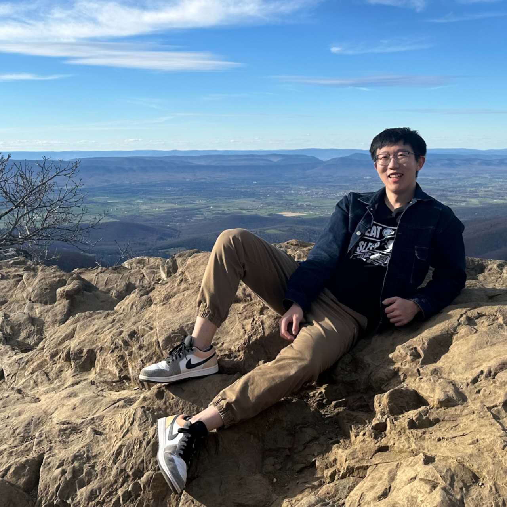
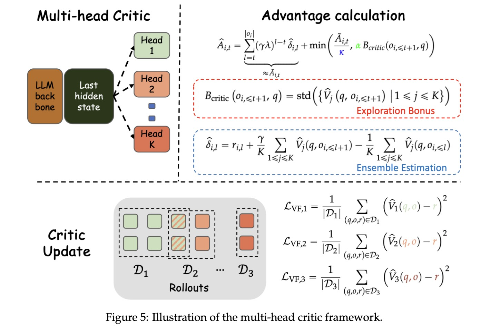
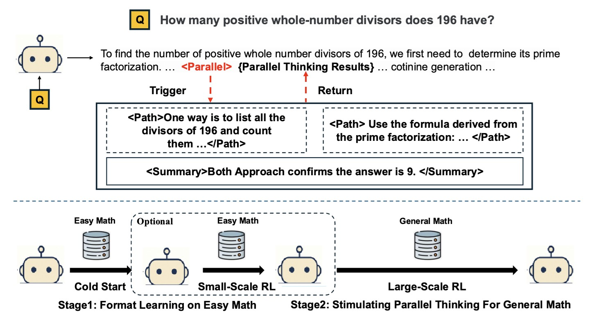
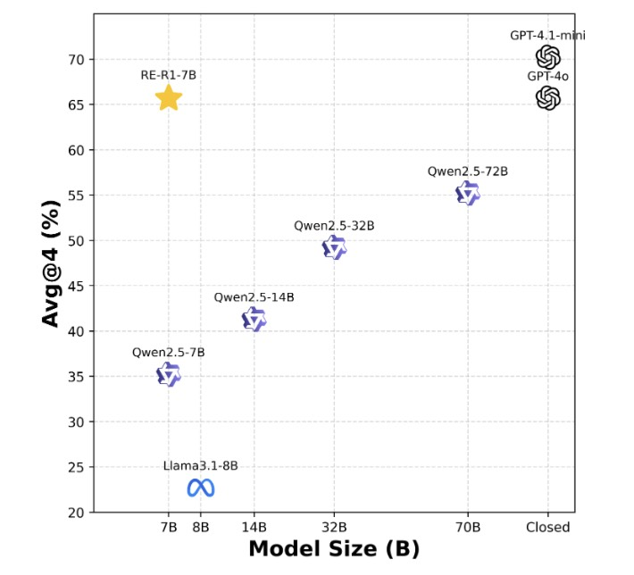
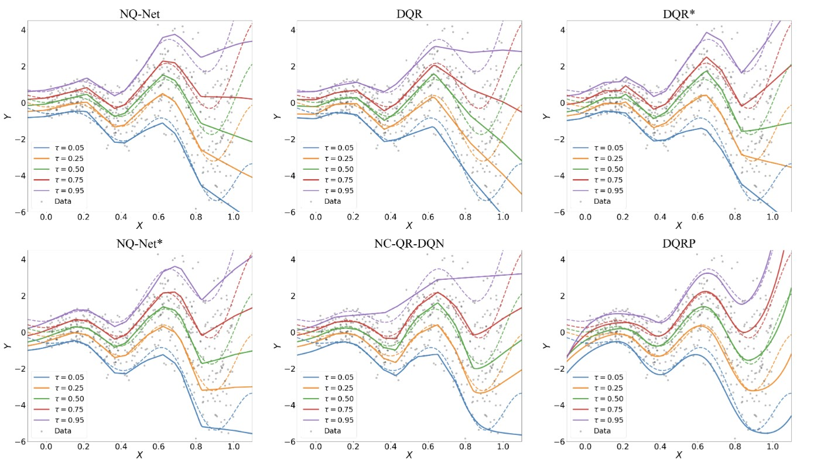

|
Runpeng Dai
I am a third-year Ph.D. candidate at the University of North Carolina at Chapel Hill, advised by Prof.
Hongtu Zhu. Before that, I obtained my B.S in Statistics from the Shanghai University of Finance and Economics where I was advised by Prof.
Fan Zhou. My research sits at the intersection of Reinforcement Learning and LLM Reasoning, bridging theory and practice in AI.
I am actively seeking 2026 summer internships. Let's connect!
|

|
Research Experience
May 2025 - August 2025
- Develop Curiosity-Driven Exploration leveraging a model's intrinsic sense of curiosity to guide exploration in RLVR
- Collaborated with fellow interns and colleagues on the Parallel-R1 and Multimodal exploration.
May 2024 - July 2024
- Proposed a transformation-invariant sensitivity measure for LLMs and VLMs.
- The measure can be applied to safeguard vulnerable parameters during quantization and model merging.
Selected Publications
Reasoning LLM
|

|
CDE: Curiosity-Driven Exploration for Efficient Reinforcement Learning in Large Language Models
Runpeng Dai, Linfeng Song, Haolin Liu, Zhenwen Liang, Dian Yu, Haitao Mi, Zhaopeng Tu, Rui Liu, Tong Zheng, Hongtu Zhu, Dong Yu.
(arXiv), 2025.
[Paper]
|
|

|
Parallel-R1: Towards Parallel Thinking via Reinforcement Learning
Tong Zheng, Hongming Zhang, Wenhao Yu, Xiaoyang Wang, Xinyu Yang, Runpeng Dai, Rui Liu, Huiwen Bao, Chengsong Huang, Heng Huang, Dong Yu.
(arXiv), 2025.
[Paper]
[Code][Over 100+ Stars]
|
|

|
R1-RE: Cross-Domain Relation Extraction with RLVR
Runpeng Dai, Tong Zheng, Run Yang, Kaixian Yu, Hongtu Zhu.
(arXiv), 2025.
[Paper]
|
Reinforcement Learning and Causal Inference
|
|
Causal Deepsets for Off-policy Evaluation under Spatial or Spatio-temporal Interferences
Runpeng Dai, Jianing Wang, Fan Zhou, Shikai Luo, Zhiwei Qin, Chengchun Shi, Hongtu Zhu.
(arXiv), 2024.
[Paper]
|
|

|
Deep Distributional Learning with Non-crossing Quantile Network
Guohao Shen, Runpeng Dai, Guojun Wu, Shikai Luo, Chengchun Shi, Hongtu Zhu
(arXiv), 2025.
[Paper]
|
Teaching & Professional Service
|